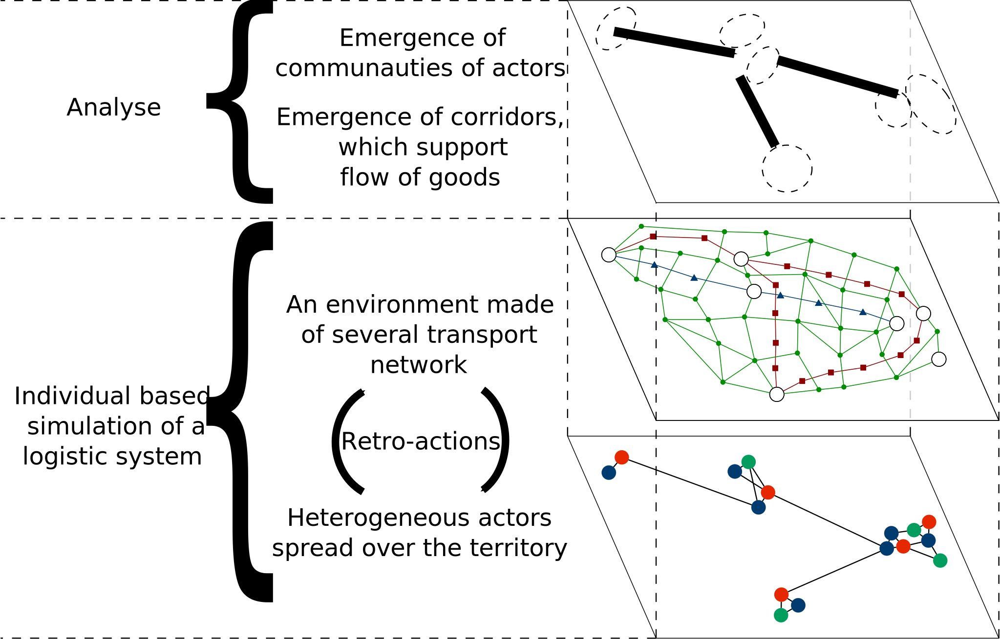
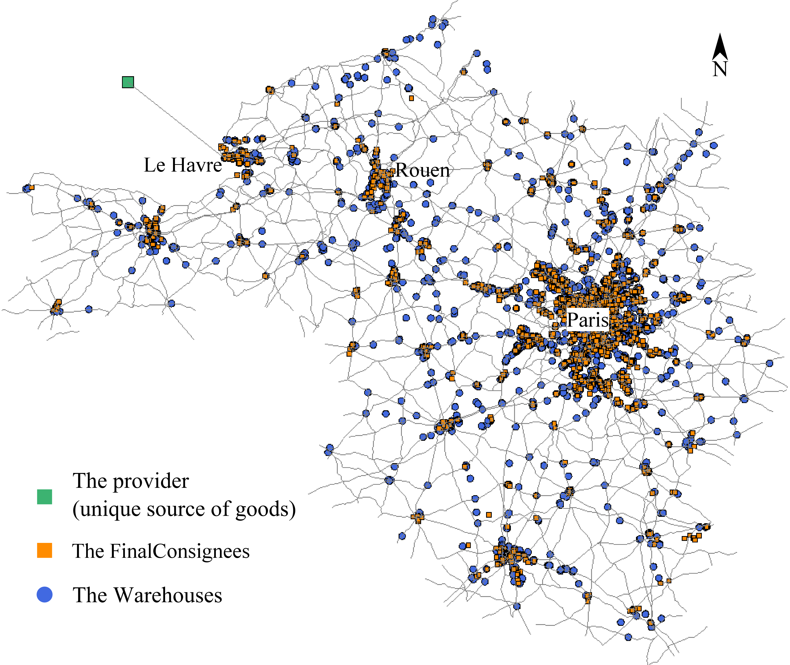

A Systemic Approach with Agent-based Model and Dynamic Graphs to Understand the Organization of a Logistic System
Colloque International Devport
Le Havre, France
May 19-20, 2016
A Systemic Approach with Agent-based Model and Dynamic Graphs to Understand the Organization of a Logistic System
Thibaut Démare
Cyrille Bertelle, Antoine Dutot and Laurent Lévêque
LITIS and UMR-IDEES - Université du Havre
Colloque International Devport - Le Havre, France
May 19-20, 2016
Overview
Context
Model
Implementation
Results
Context
How do we define a logistic system?
It is a geographical territory composed of urban areas and of logistic structures.
These structures support organised flows of goods which mainly move between the urban areas, forming the logistic corridor.
The goods enter and leave the system through well-known access nodes.
Different constraints (spatial, economical, political, or ecological) act over the system.
There are numerous and heterogeneous actors (importers, exporters, freight forwarders, logistic providers,...). Their behaviours and interactions with each other allow to organise the flows of goods. They are auto-organised.
Figure 1: Each actor manages a part of the flow
Problematic
We want to understand how actors with different goals, are organised around all the logistic infrastructures to manage flows of goods despite all the constraints of the system.
We are looking for an individual-based model which can reproduce the working of a logistic system thanks to the simulation.
And then we could test different scenarios on this simulation to understand how the local decisions impact the system.
A Complex System Approach
We can perceive logistic systems as complex and we will use the concepts of the complexity science to model such a system.
A Multi-agent approach : we model the numerous and heterogeneous actors and infrastructures by agents with their own local behaviours and properties.
A multi-scale approach : we want to observe how the macro properties of the system emerge from these local properties and behaviours.
Model
A model in two main parts
Each actors and logistic structures from the reality are modelled as reactive agents (individual-based model) :
They have defined rules about how they can interact with each other and how they must behave.
Agents bring flexibility since they can be adapted to different logistic system.
A dynamic graph represents the interactions between the agents.
The transportation network :
It is made of dynamic sub-graphs in order to integrate multi-modality.
Vehicles move over the network and leave a dynamic trace on their way in order to represent the traffic's evolution.

Figure 2: Model representation
Implementation
The implementation
We implemented the model as a step-by-step simulation into the agent-based simulation platform GAMA.
We use real data on the Seine axis to check its validity and to make measures.
The Seine axis is mostly represented by the road (around 90% of the traffic is by road).
The implemented agents:
Final consignees: consume stocks and choose logistic providers.
Logistic providers: build and manage supply chain to outsource stocks.
Warehouses: spread over territory, they provide storage surface.
Providers: they play the role of access nodes to the territory.

Figure 5: the territory and some agents of the simulation
Configuration and analysis
How to configure the simulation?
The input data: the transportation network, the position and properties of each agent,...
We can set locally the consumption of the population.
We can set the restock strategy of logistics providers.
Logistics providers can use different strategies to build supply chains.
...
What can be analysed?
Observe the effects of disrupting events (such as road accidents).
Highlight paths with the highest values of traffic.
Detection of spatial cluster (logistic areas) thanks to neighbourhood graphs.
Measure accessibility of agents thanks to Schimbel's index.
Measures of logistics performances: time to deliver goods and number of stock shortages. These measures can be computed for each agent, for regions, or for the whole system.
...
Results
How do restock strategies affect stocks shortages?
How do best strategies emerge from local decisions?
Figure 2: Strategies adoption
Conclusion
To sum up
Logistic systems can be seen as complex systems.
We used an agent based model and dynamic graphs to represent such a system.
It brings the possibility to represent the dynamics of such a system and the adaptability to different logistic systems.
The model has been implemented on GAMA and we can experiment it on the Seine axis.
We can observe the effect of different strategies adopted by agents and how the best ones emerge from local decisions.
Perspectives
We would like to implement new measures of logistic performance based on cost in order to observe the competition between Le Havre and Antwerp.
We want to implement new disrupting events in order to observe how the agents restructure their organisation.
We want to study the interaction network in order to detect special communities of actors.